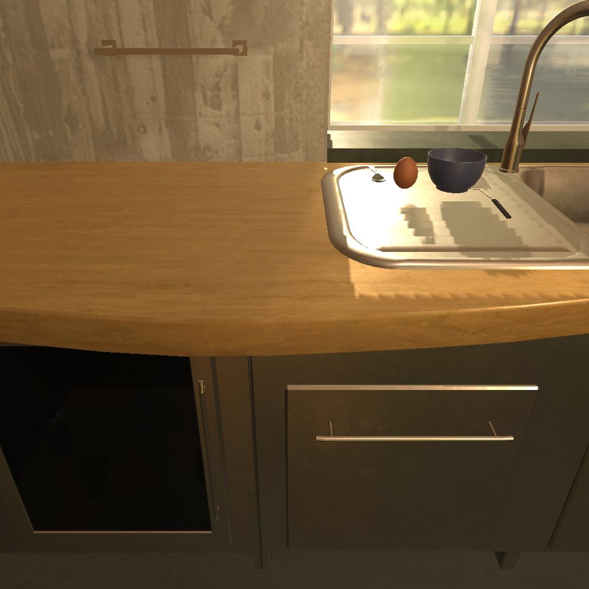

---------------------------------------------------------task: 26---------------------------------------------------------
--------------------------------------------------------------------------------------------------------------------------------------------------------------------
--------------------------------------------------------------------------------------------------------------------------------------------------------------------
Step:--------------------------------------------------------------------------9-------------------------------------------------------------------------------
----------------------------------------
VLM Prompt:
Image1:
**Instruction**
1. Analyze the provided image to identify all visible household objects, focusing on those relevant to the task description "find two kettle and put them in cabinet."
2. Use the analysis of the image and the task hint "The agent must find an object of the desired type, pick it up, find the correct location to place it, put it down there, then look for another object of the desired type, pick it up, return to previous location, and put it down there with the other object." to answer the question: what is the most reasonable action in the choices for the task description "find two kettle and put them in cabinet"?
4. Decide and write the answer using the template: The answer is: (i): , where i is the real number. If there is no desired object in the image, search every place based on **Initial Observation** to find the object. And if no one is exactly correct, choose a similar answer.
**Initial Observation**
You are in the middle of a room. Looking quickly around you, you can see countertop (1), coffeemachine (1), cabinet (1-4), drawer (1-8), sink (1), sinkbasin (1), garbagecan (1), fridge (1), microwave (1), dresser (1), sidetable (1)
**Answer Choices**
(1): go to countertop 1
(2): go to coffeemachine 1
(3): go to cabinet 1
(4): go to drawer 1
(5): go to sink 1
(6): go to sinkbasin 1
(7): go to garbagecan 1
(8): go to drawer 2
(9): go to fridge 1
(10): go to microwave 1
(11): go to dresser 1
(12): go to sidetable 1
(13): go to drawer 3
(14): go to drawer 4
(15): go to drawer 5
(16): go to drawer 6
(17): go to drawer 7
(18): go to drawer 8
(19): open cabinet 4
(20): close cabinet 4
(21): examine cabinet 4
**Answer**
Let's think step by step by following the instructions.
----------------------------------------
----------------------------------------
Original Response:
The task is to find two kettles and put them in a cabinet. From the initial observation, we know there are multiple cabinets and drawers in the room. Since kettles are not usually stored on countertops, in sinks, or in garbage cans, we can eliminate options (1), (5), (6), and (7). They are also not typically stored in fridges or microwaves, so we can eliminate options (9) and (10). The same goes for a coffeemachine, dresser, and sidetable, so we can eliminate options (2), (11), and (12).
The most likely places to find kettles would be in cabinets or drawers, so we should focus on those options. Since we are looking for two kettles, we should start by examining a cabinet that could potentially hold more than one item, such as cabinet 4.
The answer is: (21): examine cabinet 4. If the kettles are not there, we would continue to search other cabinets and drawers based on the initial observation.
----------------------------------------
----------------------------------------
>>> Refine Original VLM Response and Get Pure Action: examine cabinet 4
----------------------------------------
-----------------------------------------------------------------
Running time: 8.396013498306274 seconds
Total Money: 9.36068
-----------------------------------------------------------------
-----------------------------------------------------------------
Text Observation:On the cabinet 4, you see a faucet 1, a bowl 1, a egg 1, a spatula 1, and a spoon 1.
-----------------------------------------------------------------
UNSUCCEED